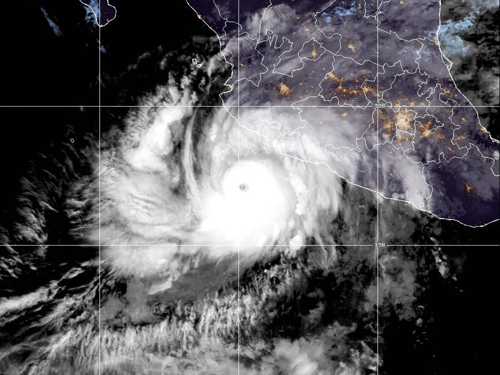
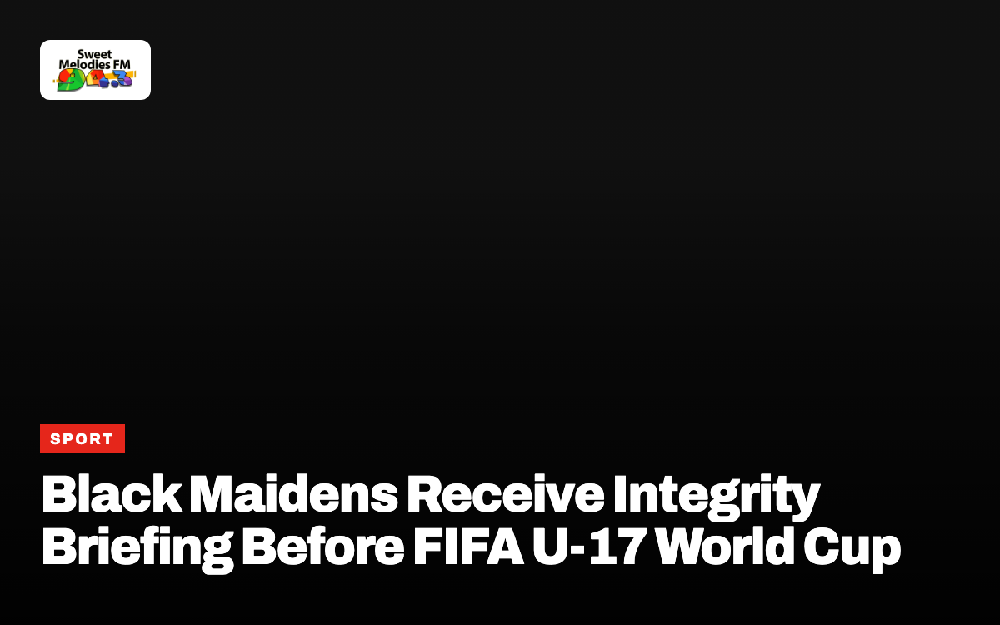

News

Business
GRA Clarifies Digital VAT System Will Not Add New Tax
Tax officials confirm that 92 streaming platforms already charge the levy, while 100 newly identified foreign services will be added gradually.
Christian NewsAll →

Pope Leo XIV to undergo surgery in Rome for lung nodule

Agyinasare cautions Ghanaians against culture of lies

Davido praises John Mahama after church video goes viral

Pope Leo XIV to undergo lung surgery in Rome

Theophilus Sunday Hosts Day 2 of Tarry Abuja 2026

Ohemaa Mercy Releases Live Worship Video ‘Songs Of Revival’
GhanaAll →

Fire at Mallam GRIDCo substation disrupts power in parts of Accra

GoldBod refines up to 90 per cent of gold in Ghana, CEO tells Parliament

Ghana delegation attends IMF World Bank meetings in Bangkok

GTEC orders public universities to reopen by October 16

IMF raises Ghana 2026 growth forecast to 5.7 percent

Moody’s upgrades Ghana credit rating to B3 with stable outlook
WorldAll →

Donald Trump announces plans for resource exploration in Greenland
WorldDrone attacks sink commercial ship off Bulgaria in Black Sea
WorldDonald Trump announces Russia Ukraine energy ceasefire deal
WorldNepal evacuates northern villages as flash flood destroys buildings

Hurricane Simon reaches Category 4 off Mexico Pacific coast
WorldUS judge extends White House press access for banned media outlets
SportAll →

Nana Fitz urges GFA and Sports Ministry not to rush Black Stars appointment
SportGhana Premier League title race opens up after decline of top clubs

Black Maidens Receive Integrity Briefing Before FIFA U-17 World Cup

GFA fines Bibiani Gold Stars over CEO misconduct

Black Queens arrive in Takoradi for Olympic qualifier against Mauritius
SportGhana U17 team targets semi-finals ahead of Benin clash
EntertainmentAll →
Entertainment
REFFA 2026 announces nominees with 314 entries from 36 countries
EntertainmentMajid Michel’s elder sister celebrates actor as family’s biggest star
EntertainmentKofi Adjorlolo explains absence from LilWin movie project
EntertainmentLilWin cries while describing challenges with Nigerian stars during movie shoot
EntertainmentVan Vicker sues Lil Win for GH¢10m over defamation
EntertainmentNollywood actor Harry Anyanwu praises John Mahama during film shoot
GNA WireAll →
- Assemblies of God Congress: Mahama urges churches to promote compassion, integrity 32 min ago
- Government must urgently implement Food Environment Policies to curb NCD deaths, says CAPHA 41 min ago
- Digital VAT system will not impose additional tax – GRA 41 min ago
- NARM-GH stresses competence, skills as keys to reducing maternal, newborn deaths 42 min ago
- “Digital-friendly Solutions” Debut at Smart Life Week in Seoul 59 min ago
- Let us all be mentors to our younger generation – President Mahama 1 hr ago
- Ghana Medical Trust Fund offers renewed access to specialised treatment for needy patients – Health Director 2 hr ago
- Tema Executive Lions Club screens residents, distributes 106 pairs of eyeglasses 2 hr ago
- NASSOSA ’95 commissions tennis court, donates sports equipment to alma mater 2 hr ago
- Government committed to supporting community-initiated projects – Dafeamekpor 2 hr ago
- Minister directs suspension of Obuasi SHS headmaster over sexual misconduct 2 hr ago
- Kadjebi to mark International Day of the Girl Child 2 hr ago